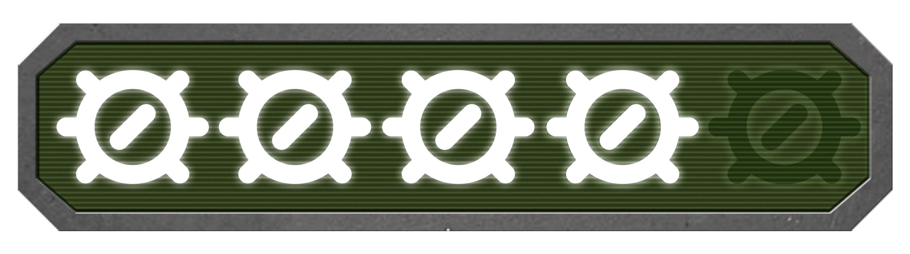

Diablo 2: Resurrected
Diablo 2: Resurrected é uma remasterização impressionante que captura perfeitamente a essência do jogo original. Com visuais aprimorados e suporte para resoluções modernas, o jogo ganha uma nova vida, mantendo a atmosfera sombria e viciante que os fãs adoravam.
A jogabilidade clássica, com sua ação intensa e aprofundada progressão de personagens, permanece intacta, proporcionando uma experiência nostálgica e envolvente. A adição de melhorias, como um novo sistema de resolução de inventário, melhora a qualidade de vida do jogo.
Indispensável para os fãs do jogo original que procuram reviver a magia de Diablo 2, esta remasterização é tudo o que eles esperavam.